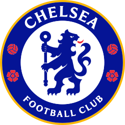

Deze website vertelt over de club

De club werd opgericht in 1905 en speelt in de Premier League. Chelsea speelt zijn thuiswedstrijden op Stamford Bridge dat 40.343 plaatsen telt. Chelseas traditionele uitrusting bestaat uit een volledig blauw shirt en short, wat de club de bijnaam The Blues opleverde. Na winst van de UEFA Conference League in 2025 werd Chelsea de enige club ooit die de UEFA Champions League, de UEFA Cup Winners' Cup, de UEFA Europa League en de UEFA Conference League wist te winnen.